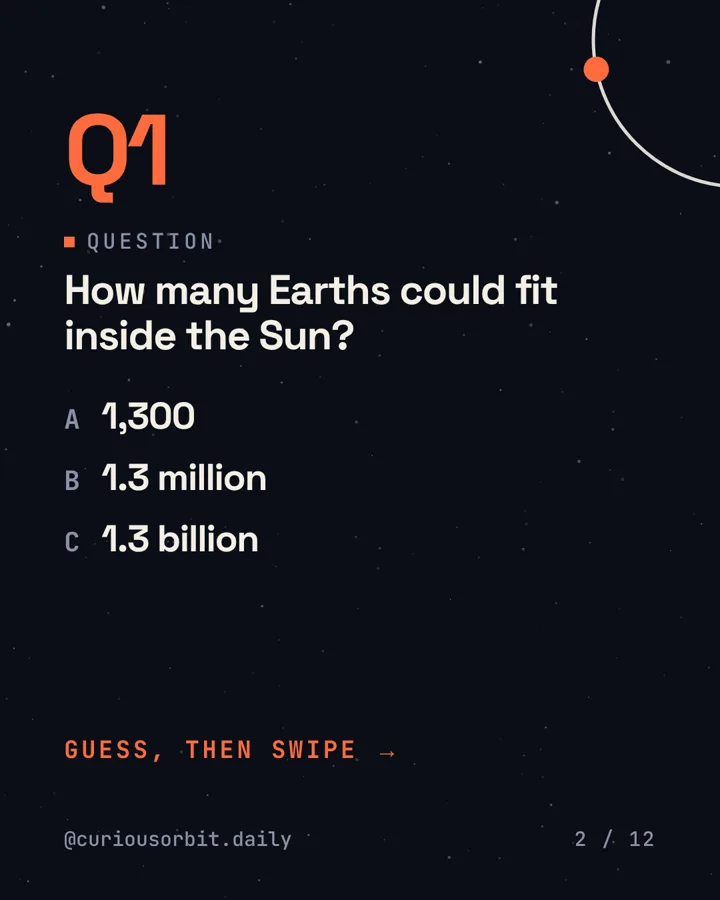
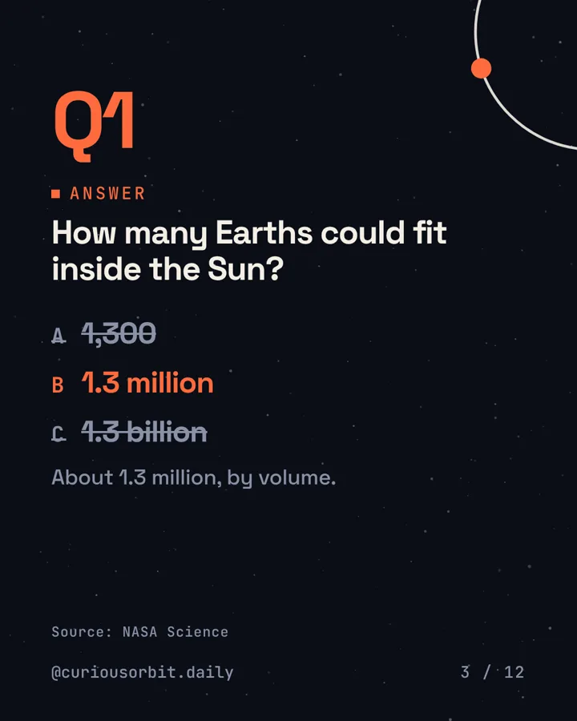
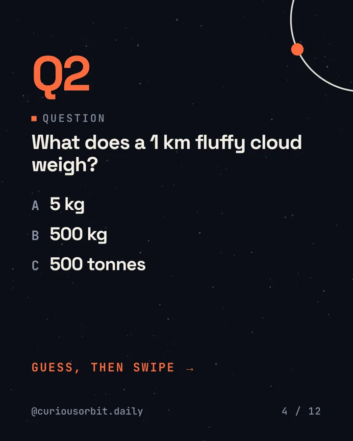
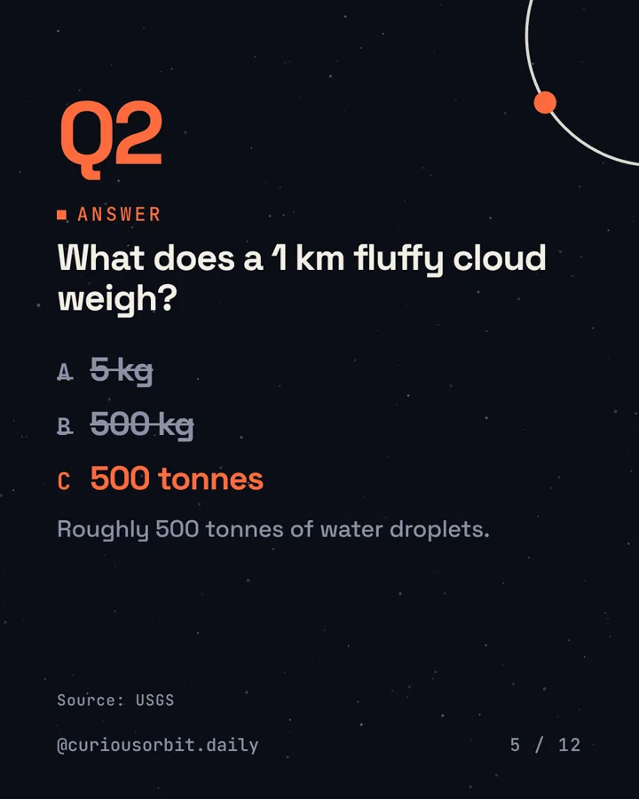
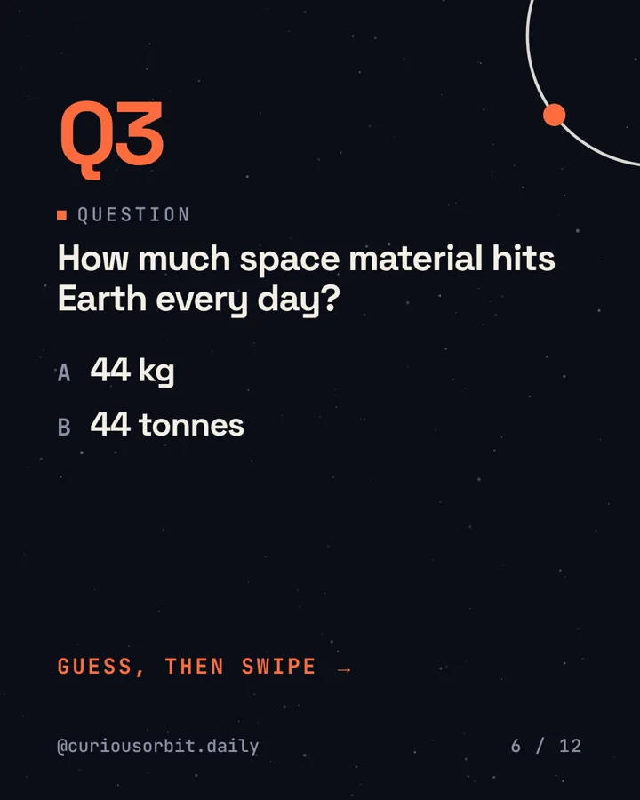
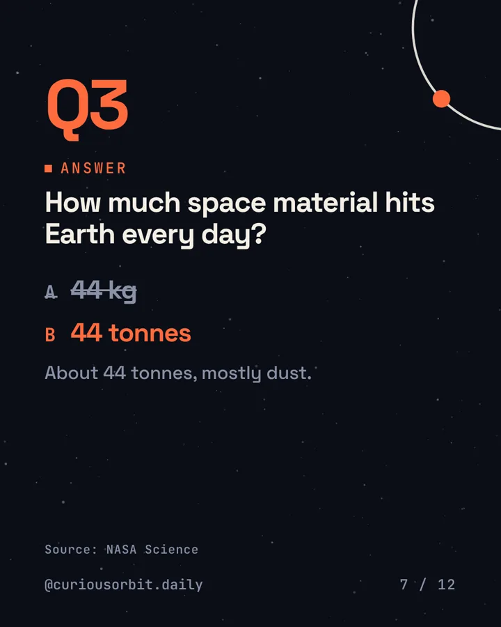
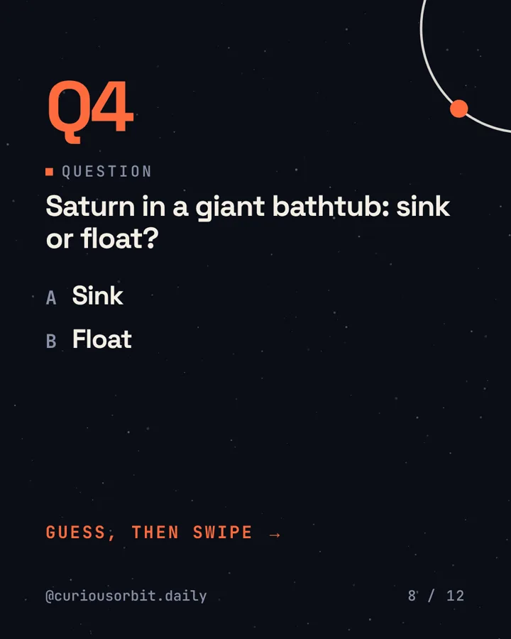
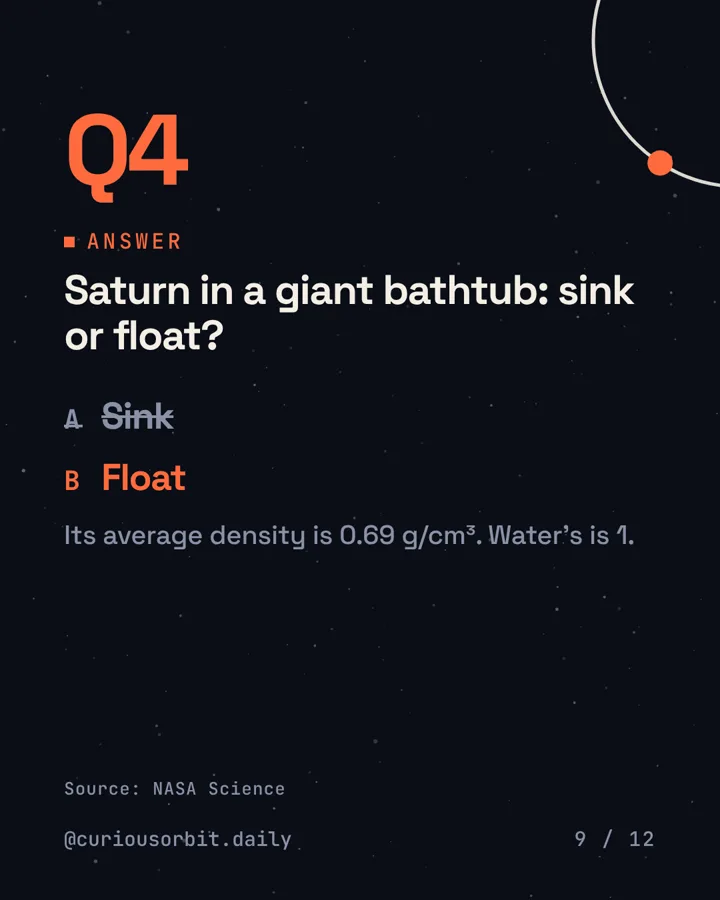
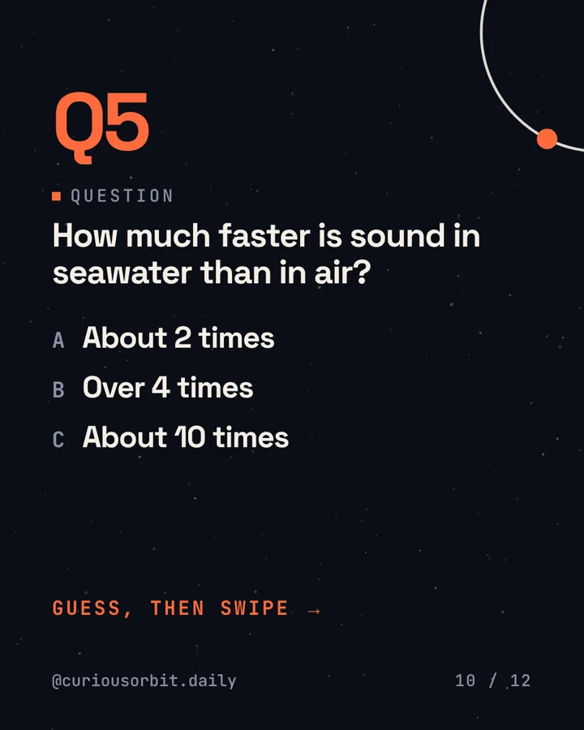
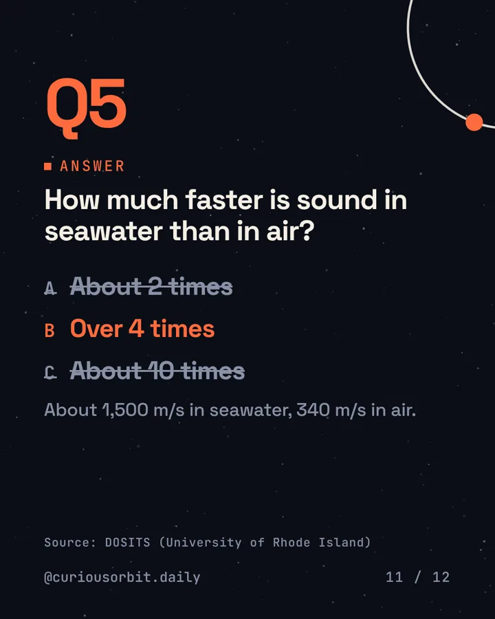
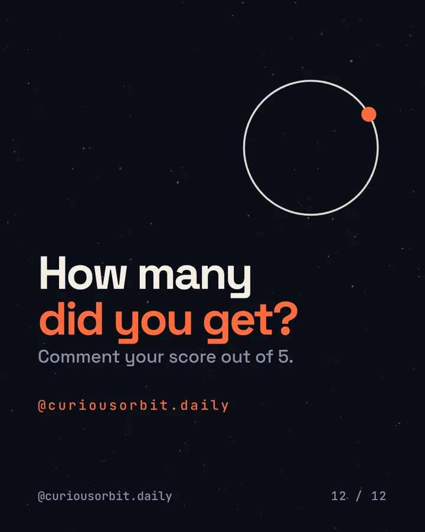
Quiz · Fact 25 · carousel
5 questions. How many can you get?
Quiz time. Guess before you swipe.
Comment your score out of 5. No Googling.
Fact 25 · carousel
This fact drops Thu 8 Oct, 1 pm.
No spoilers. Get it in your inbox the morning after, or follow along on Instagram.